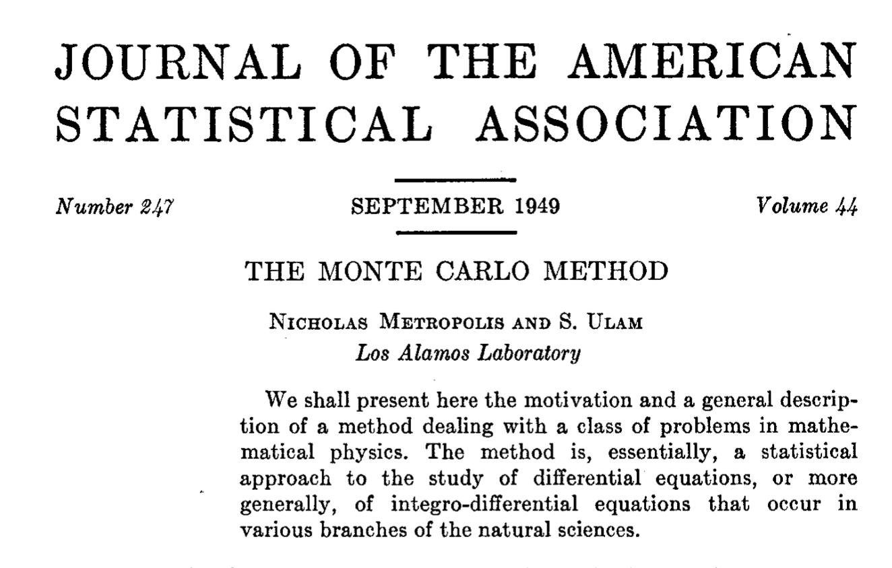
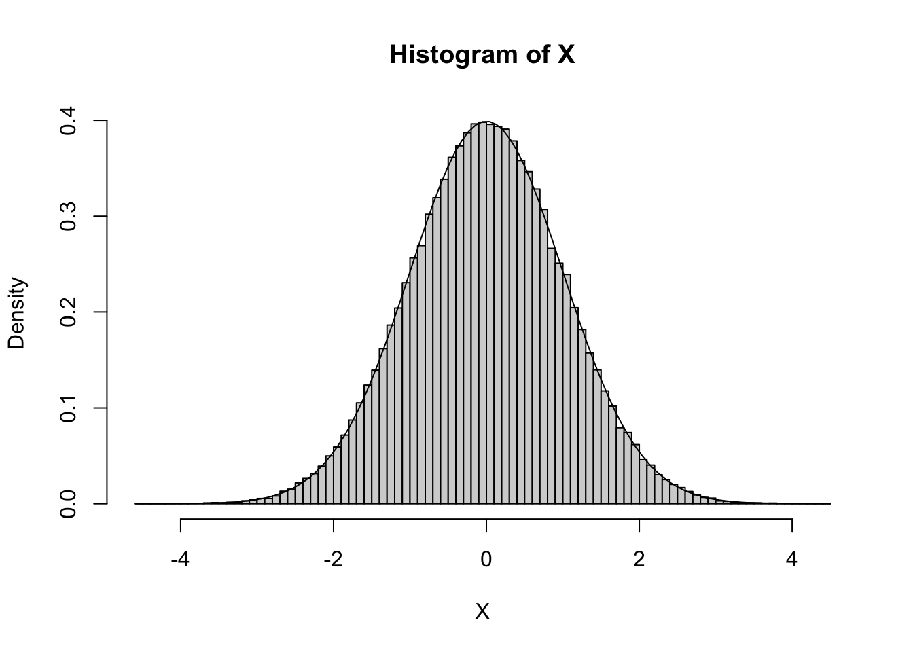
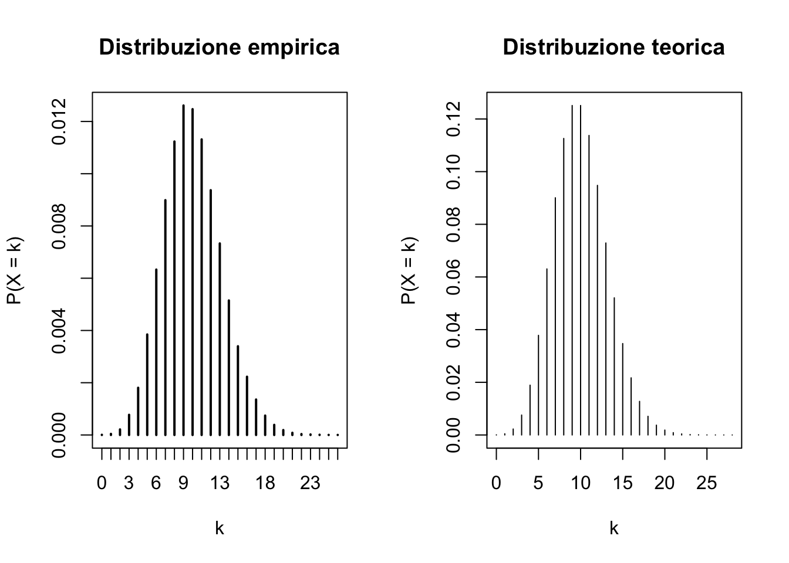

Gli esercizi R associati sono disponibili a questo link
I metodi Monte Carlo
Nell’unità H abbiamo dedicato moltissime energie per cercare di capire come simulare dei valori (pseudo) casuali da variabili aleatorie continue e discrete.
Ciò che tuttavia non abbiamo spiegato è l’utilità di queste tecniche.
Il motivo è semplice: le possibili applicazioni sono talmente numerose che è necessario introdurle separatamente in questa lezione… e probabilmente scalfiremo solamente la superficie.
Metodo Monte Carlo
Definiamo metodo Monte Carlo una qualsiasi procedura che coinvolga l’utilizzo di numeri (pseudo) casuali.
Alcuni cenni storici
I metodi Monte Carlo hanno una lunga storia; alcuni di essi sono stati usati perfino prima dell’invenzione dei computer.
I primi utilizzi moderni, ovvero basati su numeri pseudo-casuali, sono stati condotti (tra gli altri) da Enrico Fermi, Nicholas Metropolis, Richard Feynman e John von Neumann tra gli anni ’30 e ’40.
Il neonato metodo Monte Carlo aveva quindi delle importanti applicazioni in fisica. In particolare, importanti passi avanti furono fatti all’interno del progetto Manhattan.
L’algoritmo di Metropolis, sviluppato in quegli anni, è tutt’oggi ampiamente usato. Purtroppo è prematuro presentarlo in questo corso: lo vederete più avanti!
Approfondimento
Hitchcock (2003). A history of the Metropolis-Hastings algorithm. The American Statistician57(4), 254–257.
“The Monte Carlo Method”

Possibili applicazioni
I metodi Monte Carlo hanno applicazioni in tutte le discipline scientifiche, incluse la fisica, biologia, medicina, genetica, informatica, matematica.
Per ovvie ragioni, noi approfondiremo le applicazioni legate alla probabilità e alla statistica. Alcuni esempi sono riportati nel seguito.
La statistica bayesiana moderna fa uso intensivo dei metodi Monte Carlo.
Concetti chiave di data mining & machine learning, come la suddivisione in insieme di stima & verifica o la convalida incrociata, sono per definizione basati sulla simulazione di numeri casuali.
Infine, grazie alla simulazione è possibile verificare la validità dei risultati “asintotici” che vengono presentati nei corsi di inferenza statistica.
Approssimazione di una probabilità
Si supponga di voler calcolare una determinata probabilità \(\pi\) di un certo esperimento casuale. Definiamo una variabile aleatoria di bernoulli \(Z\) tale che \[
\pi = \mathbb{P}(Z = 1),
\]
ovvero un indicatore binario che denota se l’evento si è verificato o meno.
In molti casi è difficile se non praticamente impossibile calcolare \(\pi\) analiticamente.
Esempio 1
Si supponga che \(X \sim \text{N}(0,1)\) e si ponga \(Y = \cos(X)\). Il calcolo di \[
\pi = \mathbb{P}(Y > 0) = \mathbb{P}\{\cos(X) > 0\},
\] non è affatto semplice usando solo “carta e penna”: provateci, se volete.
Esempio 2
La probabilità di vittoria della tombola \(\pi\) si potrebbe calcolare “carta e penna”, ma questa operazione sarebbe lunga e faticosa.
Approssimazione di una probabilità
Il metodo Monte Carlo prevede di simulare tante volte l’esperimento casuale in questione e contare la frazione di volte che l’evento si è verificato (ovvero \(Z = 1\)).
In altri termini, consideriamo delle variabili aleatorie binarie iid \(Z_1,\dots,Z_R\) aventi probabilità \(\pi\). La probabilità \(\pi\) viene stimata tramite la frazione di successi.
Il metodo Monte Carlo è di estrema utilità perché permette di approssimare una determinata probabilità senza fare alcun conto analitico.
Nota
Il punto cruciale è che spesso è possibile simulare un esperimento casuale senza conoscere \(\pi\), che infatti è la probabilità che siamo interessati ad approssimare.
Esempio
Si supponga nuovamente che \(X \sim \text{N}(0,1)\) e si ponga \(Y = \cos(X)\). Siamo interessati a calcolare la probabilità: \[
\pi =\mathbb{P}(Y > 0) = \mathbb{P}\{\cos(X) > 0\}.
\]
Definiamo quindi la variabile binaria\[
Z = \mathbb{1}(Y > 0) = \mathbb{1}\{\cos(X) > 0\},
\] ovvero una variabile aleatoria bernoulliana che vale \(1\) se \(\cos(X) > 0\) e vale \(0\) altrimenti.
É facile verificare (fatelo per esercizio!) che \[
\pi = \mathbb{P}(Z = 1) = \mathbb{P}(Y > 0).
\]
Risultato chiave
Simulare delle copie iid dalla legge di \(Z\) è molto semplice, nonostante la probabilità \(\pi\) sia ignota.
Esempio (continua)
Per approssimare la probabilità \(\pi = \mathbb{P}(Z = 1) = \mathbb{P}\{\cos(X) > 0\}\) dobbiamo quindi generare tante copie iid da questa legge, ovvero \(Z_1,\dots,Z_R\).
R <-5000# Numero di replicheset.seed(123)X <-rnorm(R, 0, 1) # Ottengo R copie da una distribuzione gaussianaY <-cos(X) # Ottengo R copie dalla distribuzione di YZ <- Y >0# Vettore logico che verifica se Y > 0 o menoZ[1:10]
Il numero \(R\) rappresenta il numero di repliche e determina, come vedremo, la precisione della nostra stima Monte Carlo.
A questo punto, l’approssimazione si ottiene considerando la proporzione di successi
prop.table(table(Z)) # Considero la frequenza relativa
Z
FALSE TRUE
0.1158 0.8842
mean(Z) # Oppure, più semplicemente
[1] 0.8842
Errare è l’unica certezza
Come tutte le approssimazioni, anche il metodo Monte Carlo comporta un errore.
La peculiarità delle approssimazioni Monte Carlo è che sono, per definizione, casuali.
Questo significa che ogni volta che eseguiamo la procedura otteniamo un valore leggermente diverso. Ad esempio:
set.seed(100) # Imposto un seed diverso da primaZ <-cos(rnorm(R, 0, 1)) >0# Calcolo gli indicatori (codice in forma compatta)mean(Z)
[1] 0.8878
Per cui sia la stima ottenuta che l’errore commesso sono aleatori!
Fortunatamente, questo è un contesto che dovreste conoscere molto bene. La nostra procedura Monte Carlo è infatti, a tutti gli effetti, uno stimatore di \(\pi\). ## Come mai funziona?
Siano \(Z_1,\dots,Z_R\) delle variabili aleatorie binarie indipendenti ed identicamente distribuite, aventi la stessa distribuzione della variabile \(Z \sim \text{Ber}(\pi)\). Lo stimatore\[
\hat{\pi} = \frac{1}{R}\sum_{r=1}^R Z_r = ("\text{Proporzione di successi}"),
\] coincide con l’approssimazione Monte Carlo.
Lo stimatore \(\hat{\pi}\) ha delle ottime proprietà inferenziali, che si studiano in un qualsiasi corso di inferenza statistica; torneremo a parlare di stimatori nell’unità M.
In primo luogo, lo stimatore \(\hat{\pi}\) è non distorto, infatti: \[
\mathbb{E}(\hat{\pi}) = \frac{1}{R}\sum_{r=1}^R \mathbb{E}(Z_r) = \frac{1}{R}\sum_{r=1}^R \mathbb{P}(Z = 1) = \mathbb{P}(Z = 1) = \pi.
\]
Inoltre, lo stimatore \(\hat{\pi}\) è consistente, infatti per la legge (forte) dei grandi numeri si ottiene che: \[
\hat{\pi} = \frac{1}{R}\sum_{r=1}^R Z_r \overset{\text{q.c.}}{\longrightarrow} \mathbb{P}(Z = 1) = \pi, \qquad R \rightarrow \infty.
\]
La varianza dello stimatore I
Possiamo infine calcolare la varianza di \(\hat{\pi}\), che risulta pari alla seguente quantità \[
\begin{aligned}
\text{var}(\hat{\pi}) = \frac{1}{R^2}\sum_{r=1}^R\text{var}(Z_r) = \frac{1}{R^2}\sum_{r=1}^R \pi(1-\pi) = \frac{\pi ( 1- \pi)}{R}.
\end{aligned}
\]
Da questa equazione è evidente il ruolo chiave del numero di repliche \(R\).
Il numero di repliche\(R\) si può interpretare come se fosse una sorta di numerosità campionaria, che idealmente noi possiamo aumentare a piacere.
Un numero di repliche elevato aumenta quindi la precisione ma ha un costo in termini di risorse computazionali (= il computer impiega più tempo).
Nota
La varianza \(\text{var}(\hat{\pi})\) dipende dal valore di \(\pi\), che è ignoto. Per cui una stima della varianza si ottiene rimpiazzando \(\pi\) con la sua stima \(\hat{\pi}\).
Vogliamo valutare l’impatto della scelta di \(R\) ed implementiamo quindi la funzione MonteCarlo, che calcola sia l’approssimazione che la sua deviazione standard.
MonteCarlo <-function(R) { Z <-cos(rnorm(R, 0, 1)) >0 estimate <-mean(Z) std.error <-sqrt(estimate * (1- estimate) / R) out <-c(estimate, std.error)names(out) <-c("estimate", "std.error") # Aggiungo solo per ragioni estetiche out}
Proviamo con alcuni valori diversi di \(R\). Si nota un progressivo miglioramento:
MonteCarlo(100) # R = 100 conduce a uno std.error elevato
estimate std.error
0.8600000 0.0346987
MonteCarlo(5000) # R = 5000 conduce a uno std.error ragionevole
estimate std.error
0.891000000 0.004407244
MonteCarlo(10^6) # R = 10^6 conduce a uno std.error basso
estimate std.error
0.883934000 0.000320304
Esercizio riassuntivo I
Sia \(X\) una normale standard. Si approssimi tramite Monte Carlo la probabilità seguente \[
\pi = \mathbb{P}(1 < X < 2).
\]
Si ottenga quindi una stima Monte Carlo dell’errore commesso. - Si ripeta la procedura per diversi valori del numero di repliche \(R\).
Si confrontino i risultati con il vero valore di \(\mathbb{P}(1 < X < 2)\). Le approssimazioni Monte Carlo migliorano al crescere di \(R\)?
(Difficile) Si ottenga un intervallo di confidenza per lo stimatore \(\hat{\pi}\) di livello approssimato \(1 - \alpha = 0.95\).
Schema della soluzione
MonteCarlo <-function(R) { X <-rnorm(R) Z <- (X >1) & (X <2) estimate <-mean(Z) std.error <-sqrt(estimate * (1- estimate) / R) out <-c(estimate, std.error)names(out) <-c("estimate", "std.error") out}# Vero valorepnorm(2) -pnorm(1)
[1] 0.1359051
MonteCarlo(100) # R = 100 conduce a std.error elevato
estimate std.error
0.10 0.03
MonteCarlo(5000) # R = 5000 conduce a std.error ragionevole
estimate std.error
0.129800000 0.004752935
MonteCarlo(10^6) # R = 10^6 conduce a std.error basso
estimate std.error
0.1355270000 0.0003422856
Integrazione Monte Carlo I
L’idea di approssimare una probabilità tramite simulazione può essere generalizzata.
In particolare, supponiamo di voler calcolare un generico integrale del tipo \[
\mathcal{I} = \int_{\mathcal{X}} g(x) f(x) \mathrm{d}x = \mathbb{E}\{g(X)\},
\] dove \(f(x)\) è la densità una variabile aleatoria \(X\) avente supporto \(\mathcal{X}\).
La probabilità di un evento è un caso particolare di questo contesto. Infatti se \(g(x) = \mathbb{1}(x \in B)\) si ottiene \[
\mathcal{I} = \int_{\mathcal{X}} g(x) f(x) \mathrm{d}x = \int_B f(x) \mathrm{d}x = \mathbb{P}(X \in B).
\]
Esattamente come per la probabilità di un evento, vogliamo usare la simulazione per ottenere un’approssimazione di \(\mathcal{I}\).
Integrazione Monte Carlo II
Sia \(X \sim f(x)\). Per approssimare l’integrale \[
\mathcal{I} = \int_{\mathcal{X}} g(x) f(x) \mathrm{d}x = \mathbb{E}\{g(X)\}
\] si simulano dei valori \(X_1,\dots,X_R\) da \(f(x)\). Si calcolano quindi i valori \(g(X_1),\dots, g(X_R)\) ed infine si considera la loro media campionaria.
La stima Monte Carlo \(\hat{\mathcal{I}}\) è tale che \[
\hat{\mathcal{I}} = \frac{1}{R}\sum_{r=1}^R g(X_r) \approx \mathbb{E}\{g(X)\} = \mathcal{I}.
\]
Nota
Il metodo descritto può essere in realtà usato per approssimare un qualsiasi valore atteso \(\mathbb{E}\{g(X)\}\), anche quando la variabile aleatoria \(X\) è discreta.
Esempio
Supponiamo di voler calcolare il valore del seguente integrale \[
\mathcal{I} = \int_0^1[\cos(50x) + \sin(20x)]^2\mathrm{d}x.
\]
Si noti che questo integrale coincide con il valore atteso di una trasformazione di una variabile aleatoria uniforme \(U\), ovvero \[
\mathcal{I} = \mathbb{E}[\{\cos(50 U) + \sin(20 U)\}^2], \qquad U \sim \text{Unif}(0,1).
\]
In R pertanto possiamo calcolare \(\hat{\mathcal{I}}\) come segue
U <-runif(10^6)I_hat <-mean((cos(50* U) +sin(20* U))^2)I_hat
[1] 0.9656129
Questa funzione in realtà può essere integrata analiticamente: vale che \(\mathcal{I} \approx 0.965201\). Pertanto, l’approssimazione Monte Carlo sembra essere accurata.
Il grafico della funzione integranda nell’intervallo \((0,1)\).
curve((cos(50* x) +sin(20* x))^2, n =400)
Come mai funziona? Procediamo come prima…
Siano \(X_1,\dots,X_R\) delle copie iid aventi densità \(f(x)\). Consideriamo quindi lo stimatore seguente \[
\hat{\mathcal{I}} = \frac{1}{R}\sum_{r=1}^R g(X_r),
\] ovvero l’approssimazione Monte Carlo di \(\mathcal{I}\) che abbiamo descritto.
Anche in questo caso, otteniamo che \(\hat{\mathcal{I}}\) è uno stimatore di \(\mathcal{I}\) con ottime proprietà inferenziali.
Come in precedenza, lo stimatore $ $ risulta essere non distorto, infatti: \[
\mathbb{E}(\hat{\mathcal{I}}) = \frac{1}{R}\sum_{r=1}^R \mathbb{E}\{g(X_r)\} = \frac{1}{R}\sum_{r=1}^R \mathbb{E}\{g(X)\} = \mathbb{E}\{g(X)\} = \mathcal{I}.
\]
Inoltre, lo stimatore \(\hat{\mathcal{I}}\) è consistente. Infatti per la legge (forte) dei grandi numeri \[
\hat{\mathcal{I}} = \frac{1}{R}\sum_{r=1}^R \mathbb{E}\{g(X_r)\} \overset{\text{q.c.}}{\longrightarrow} \mathbb{E}\{g(X)\} = \mathcal{I}, \qquad R \rightarrow \infty.
\]
La varianza dello stimatore I
Anche in questo caso possiamo calcolare la varianza dello stimatore \(\hat{\mathcal{I}}\): \[
\text{var}(\hat{\mathcal{I}}) = \frac{1}{R^2}\sum_{r=1}^R\text{var}\{g(X_r)\} = \frac{1}{R}\text{var}\{g(X)\},
\] con \(X \sim f(x)\).
La varianza \(\text{var}\{g(X)\}\) è tipicamente ignota, ma può essere stimata utilizzando gli stessi valori usati per stimare \(\mathcal{I}\), ad esempio tramite la varianza campionaria: \[
\widehat{\text{var}\{g(X)\}} = \frac{1}{R}\sum_{r=1}^R g(X_r)^2 - \left(\frac{1}{R}\sum_{r=1}^R g(X_r)\right)^2.
\]
Come in precedenza, un numero di repliche \(R\) elevato aumenta quindi la precisione ma ha un costo computazionale.
La varianza dello stimatore II
L’implementazione in R si ottiene come segue:
MonteCarlo <-function(R) { U <-runif(R) hU <- (cos(50* U) +sin(20* U))^2 estimate <-mean(hU) std.error <-sd(hU) /sqrt(R) out <-c(estimate, std.error)names(out) <-c("estimate", "std.error") # Aggiungo solo per ragioni estetiche out}
Proviamo con alcuni valori diversi di \(R\). Si nota un progressivo miglioramento:
MonteCarlo(100) # R = 100 conduce a uno std.error elevato
estimate std.error
0.92588110 0.09697723
MonteCarlo(5000) # R = 5000 conduce a uno std.error ragionevole
estimate std.error
0.97175199 0.01476928
MonteCarlo(10^6) # R = 10^6 conduce a uno std.error basso
estimate std.error
0.965958861 0.001045334
Istogrammi e densità
Supponiamo di simulare delle variabili aleatorie continue \(X_1,\dots, X_R\), aventi una certa densità\(f(x)\).
Se disegniamo l’istogramma di tali numeri, intuitivamente ci aspetteremo un’alta densità nell’istogramma in corrispondenza dei valori molto probabili.
In realtà, il legame tra istogrammi e densità è molto più stretto. Consideriamo \(\lambda = 1 / R\) (si veda unità D per la definizione), ovvero il valore che rende la somma delle aree dei rettangoli pari a \(1\).
In tale contesto, l’istogramma costituisce un’approssimazione della densità.
In termini più precisi, diremo che l’istogramma è uno stimatore nonparametrico della densità\(f(x)\).
X <-rnorm(10^5)hist(X, freq =FALSE, breaks =100)curve(dnorm(x), add =TRUE) # add = TRUE Aggiunge la curva al grafico precedente

Istogrammi e densità
L’idea è approssimare la funzione \(f(x)\) con dei rettangoli. Quanti più rettangoli consideriamo, tanto più accurata sarà l’approssimazione.
Ricordiamo che se \(X \sim f(x)\) allora vale che \[
\mathbb{P}(a < X < b) = \int_a^bf(x)\mathrm{d}x.
\]
Quindi idealmente l’altezza del rettangolo di base \((a, b)\) dev’essere tale che \[
(\text{``Altezza rettangolo''}) = \frac{\mathbb{P}(a < X < b)}{b - a},
\] in maniera tale che l’area del rettangolo risulti pari a \(\mathbb{P}(a < X < b)\).
Le probabilità \(\mathbb{P}(a < X < b)\) sono ulteriormente approssimate tramite Monte Carlo e sono poste pari alla proporzioni di valori \(X_1,\dots,X_R\) contenuti nell’intervallo \((a,b)\).
Approssimazione di una distribuzione discreta
Un principio simile a visto per istogrammi / densità vale anche nel caso discreto.
Sia \(X\) una variabile aleatoria discreta. In questo contesto, possiamo direttamente approssimare la funzione di probabilità\[
p(x) = \mathbb{P}(X = x),
\] utilizzando un metodo Monte Carlo.
Supponendo di poter simulare \(X_1,\dots,X_R\). Allora, una stima per \(p(x)\) è semplicemente pari alla proporzione di valori pari \(x\) che abbiamo ottenuto.
X <-rpois(10^5, 10) # Simulazione di R variabili Poisson con media 10freq_rel <-table(X) /sum(X) # Calcolo delle frequenze relativepar(mfrow =c(1, 2)) # Graficiplot(freq_rel, ylab ="P(X = k)", xlab ="k", main ="Distribuzione empirica")plot(0:28, dpois(0:28, 10),type ="h", ylab ="P(X = k)",xlab ="k", main ="Distribuzione teorica")

Esercizio riassuntivo I
Si calcoli tramite Monte Carlo il valore del seguente integrale e se ne quantifichi l’incertezza \[
\frac{1}{\sqrt{2\pi}}\int_{-\infty}^\infty\sin^2(x)e^{-x^2/2}\mathrm{d}x.
\]
Si confronti il risultato con la funzione integrate.
Si supponga di voler approssimare tramite Monte Carlo il seguente valore atteso \[
\mathbb{E}(X^2), \qquad X \sim \text{Ga}(3, 3).
\]
Si dica, motivando la risposta, quale codice produce il risultato corretto.
Codice 1
mean(rgamma(10^5, 3, 3) *rgamma(10^5, 3, 3))
[1] 0.9990672
Codice 2
X <-rgamma(10^5, 3, 3)mean(X * X)
[1] 1.335139
Esercizio riassuntivo III
Nel seguente video YouTube del canale Veritasium, viene introdotto un enigma che coinvolge un numero \(n = 100\) di prigionieri.
Utilizzando la cosiddetta “loop strategy” che viene descritta nel video, si approssimi tramite Monte Carlo la probabilità di successo dei prigionieri, per \(n = 100\).
I risultati della simulazione sono coerenti con quanto descritto nel video?
Schema della soluzione
I numeri nelle scatole (boxes), sconosciuti ai prigionieri, vengono generati casualmente.
set.seed(400)n <-100# Numero di prigionieriboxes <-sample(1:n) # Effettua una permutazione dei numeri 1:n
Per cui in questo caso (con questo seed), nella scatola 51 è contenuto il numero 97:
boxes[51]
[1] 97
In questa caso, le scatole contengono i numeri seguenti
Controlliamo ora se, tramite la “loop strategy”, i prigionieri riescono ad individuare il loro numero all’interno delle scatole (boxes). Partiamo dal primo prigioniero, che verificherà se il suo numero è presente nella prima scatola. In altri termini:
found <- boxes[1] ==1# TRUE se il PRIMO prigioniero ha trovato il suo numero
Se no, il prigionieri controlla anche in tutte le scatole seguenti, ovvero
# Loop strategy, per il PRIMO prigionierofound <-FALSEbox_checked <-1# Il PRIMO prigioniero parte dalla prima scatolafor (i in1:(n /2)) { # I prigionieri possono fare n / 2 tentativiif (boxes[box_checked] ==1) { found <-TRUE } box_checked <- boxes[box_checked] # Il numero successivo è pari al numero nella scatola corrente}found
[1] TRUE
Il primo prigioniero ha trovato il suo numero. Ora verifichiamo se tutti i prigionieri riescono a fare lo stesso:
found <-rep(FALSE, n) # Vettore di TRUE/FALSE che identifica se i prigionieri hanno trovato il proprio numero.for (j in1:n) { box_checked <- j # Il j-esimo prigioniero, parte dalla j-esima scatolafor (i in1:(n /2)) {if (boxes[box_checked] == j) { found[j] <-TRUE } box_checked <- boxes[box_checked] }}
Alcuni prigionieri riescono a trovare la loro scatola. In questo caso, tuttavia, non tutti individuano il proprio numero. Infatti:
# Effettuo la simulazione, per R = 10000R <-10000set.seed(200)Z <-replicate(R, loop_strategy(n =100))
La probabilità di successo viene quindi approssimata tramite Monte Carlo come fatto in precedenza:
estimate <-mean(Z) # Stima della probabilità di successoestimate
[1] 0.314
Esercizi aggiuntivi (non risolti)
Esercizio 1
Si ottenga un’approssimazione Monte Carlo del seguente integrale \[
\int_0^\infty x^4 e^{-x}\mathrm{d}x
\] e si quantifichi l’errore commesso. Si confronti il risultato con la funzione integrate.
Esercizio 2
Si ottenga un’approssimazione Monte Carlo del seguente integrale \[
\int_0^1 x^{1/2}(1 - x)^{1/2}\mathrm{d}x
\] e si quantifichi l’errore commesso. Si confronti il risultato con la funzione integrate.